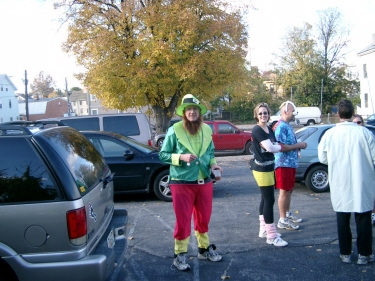
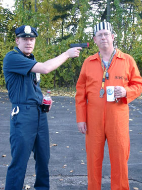
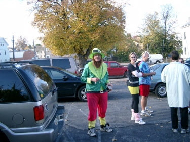

Hollow-Weenie Hash
Run #969, October 31, 2004
Hare: Oozing Syphilitic Dicktaphone
Co-Hare: SESYB
Present: Dr WHO, Fuwangi Boner, Bondo Jovi, Basket Boom Boom, Just Bert, Polly, Evil Bitch RIPTA, Ms. Gay RI, Sackless Suction, Bush Yaaker, Free Willy, Kiddie Porn, Sparky the Hobosexual, Pecker Checker, Just Michelle, and others(?).
The Run:
The 969th “Run For The Hashit” coincided with Halloween, so the RIH3 responded by doing nothing in particular. No T-shirt, no publicity, incompetent haring, etc. Another classic in the making. But it was Halloween, and a daylight run, at that. The usual Monday evening time was switched to Sunday afternoon to show off the costumes (and to confuse Bondo). Despite all this, the Newport H3 got wind of the event and showed up in force. And in costume, as well. Sackless Suction of the Newport H3 provided the following description of the costumes, so your scribe has edited and stolen them from him:
Kiddie Porn (Cannes Film Festival reject), Just Michelle (Cindi Lauper), Sparky the Hobosexual (the Dork Prince of Heck), Just Bert (bare-ass mental patient), Free Willy(a puppy), Pecker Checker (Cheerleader sans spankies), Bondo Jovi (Lance "Uniball" Armstrong), Basket Boom Boom (The Scotsman), Miss Gay Rhode Island (first: unimaginative golfer, second: glam Mr. Potatohead), Sweet and Adorable E.B. RIPTA (Mizz Potatohead), Trail Hoover (a lavatory mummy), Dr. WHO (a Woonsocket prison inmate), Fuwangi Boner (a Woonsocket Police Officer), Polly (the sociopathological leprechaun), Sackless Suction (Dr. Clayton Forrester), Bush Yaaker (learning the importance of not being seen) and our faithful hare Oozing Syphilitic Dictaphone (the Ghost of the Curse of the Bambino).
 |
After some prelubing courtesy of the ever-present Bondo traveling/emergency keg, and after giving the hare a 15 minute head start, they were off. Trail started from the parking lot on Armstrong Ave in Fox Point, and quickly emerged on Wickenden at a check mark. The Newporters, being ignorant of the East Side’s geography had no trouble with the trail. They simply followed the marks, which consisted of ample flour as well as pieces of SESYB’s disintegrating toilet paper costume. [There was considerable incentive here. But unfortunately, she had uncharitably worn shorts and a t-shirt under the papier. All were ultimately disillusioned. But I digress.] They continued east down Wickenden. The more experienced RIH3-ers had much more difficulty, mainly due to preconceived notions about where the trail should go. WHO crossed the bridge over 195, Fuwangi headed north on Brook and Basket went into Tockwotten Park. But gradually making their way east, the stragglers encountered Free Willy just as they rediscovered the trail on Gano St.. Without hesitation, and encouraged by the sighting of more and more fragments from SESYB’s biodegradeable costume, they plunged through a Cape Verdean soccer match and entered some shiggy at the old RR bridge.
 |
|
The shiggy was all too short, and they soon found themselves on George St, with trail turning north through Wayland Square. Again Basket and WHO outsmarted themselves, theorizing that the trail must lead back into the prime shiggy of Blackstone Park, or at least wind up in Swan Point Cemetery. While the rest turned up Angel, these two turned back down to Butler and Blackstone Blvd. Even Polly was smart enough not to follow them this time. The trail wound around the neighborhoods, and generally turned back west, uphill. Fuwangi now took the lead, and closely pursued by SESYB, made it up past Moses Brown School, and onto Thayer Street, where he was able to snare the hare. Having no interest in depantsing the hare, he and SESYB agreed to hang back, and give the hare some time.

Meanwhile, through a process of blind luck, Dr WHO and Basket found themselves ahead of the pack who were doggedly following the true trail, despite obvious short-cutting opportunities. [Perhaps it was because Sackless Suction kept trying to recruit joggers to the hash. Most of them were nubile young college girls, who had caught up and passed the “running” hashers with little effort. Not much chance there. But I digress.] Regardless, Thayer St was subjected to the second wave, led by Dr WHO (until the fitter Bush Yaaker and Just Bert passed him). They crossed Waterman and at a check opposite the east entrance to the Brown Yard, they regrouped. WHO finally picked up trail going through the Yard west.
Only just ahead were the dawdling Fuwangi and SESYB; and just ahead of them was the hare. When WHO emerged onto Prospect Street a chase began. The hare looked doomed until a siren started and the Providence Police zoomed up to investigate the scene. A running ghost, the running policeman, the running mummy/litterbug, a running Scotsman who had just appeared, and the running prisoner in a fluorescent orange jumpsuit were seen heading north on Prospect. Hearing the sirens, the hashers slowed and tried to look inconspicuous. Just before the police drew their weapons, they took a closer look. In the nick of time, they remembered that it was Halloween, and zoomed off down Angel, pretending to be answering a real call. After giving the hare his third(!) headstart of the hash, the FRB’s turned into the RISD Administration Garden. They ignored the statuary boob check and followed the exceptionally fresh trail out to Congdon, and to Prospect Park. A few photo-ops with some tourists, and they were back on, down Bowen and through a back parking lot to the hare’s and the BC.
|
|
The straggler gradually rolled in and grabbed a beer (Trinity IPA from a fresh keg). Inventory was taken, songs were begun. Only two were missing: Pecker Checker and Just Michelle. Contrary to the usual policy, it was felt that search parties should be sent out as the RIH3 needs all the bimbos it can get. But they finally straggled in without help. The rhubarb began to rise in earnest for once, especially when Pecker Checker proved that she had skipped the panties under her sheer panty hose, and cheerleaders skirt. Some cartwheels were suggested, but declined. WOW, MOM!

And what does the RIH3 do when they have had six or seven beers, and sung twenty or thirty songs? Why circle up, of course, and sing twenty or thirty more! The run was rated: There was no shiggy, but it was Halloween, all were costumed, there were bimbos, boneheads and beer: +6.9! Hashit: Basket, because it always seems to fit him best. Visitors were punished, songs were sung, beer was consumed. Then, songs were sung. Then, for variety, some beer was sipped. After some more songs, religion was performed, and the group made their way back down Benefit St to the cars. The On On On was across in East Providence, at the Red Bridge Tavern. But the Pats were playing, and your scribe was Trick-or-treating in Tiverton by this time, so that’s all there is.
On On